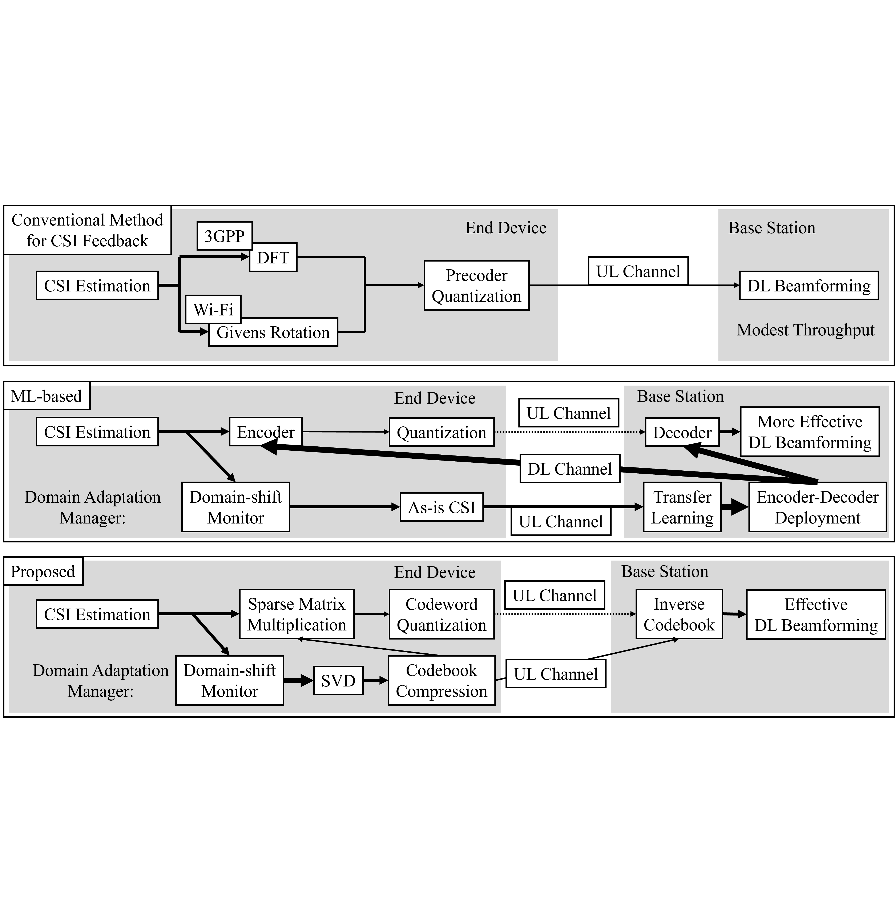

|
Seungmin Choi I am a senior in the Department of Electrical and Computer Engineering (ECE) at Seoul National University (SNU), with an overall GPA of 4.20/4.30 (Major: 4.22/4.30). Currently, I am conducting research on PHY layer optimization using Deep Learning at the Advanced Intelligent Systems Laboratory (AiSLAB), under the supervision of Prof. Hyun Jong Yang. Previously, I worked in the Network Laboratory (NETLAB) with Prof. Saewoong Bahk, where my research focused on aerial networks, IoT (UWB, UWB radar, and LoRa), and the MAC layer. I am seeking a PhD position for Fall 2026 admission. |

|
ResearchI'm interested in Communication System (with ML), RAN, and Network Design. Some papers are highlighted. |
International Journals |
|
|
|
Performance-Guaranteed CSI Feedback via Model-Agnostic Incremental Residual Compression Framework
Seungmin Choi*, Hosung Joo*, Sehyun Ryu, Tommaso Melodia, and Hyun Jong Yang Under review at IEEE Wireless Communications Letters (WCL), minor revision. [PDF] To do. |

|
Polarization Alignment for Cellular-based Mobile Aerial Communication
Yongjae Yoo, Seungmin Choi, Jeongyeup Paek, and Saewoong Bahk Under review at IEEE Transactions on Vehicular Technology (TVT). [PDF] To do. |
|

|
Compressed-CSI Feedback with Near Real-time Domain Adaptation
Hosung Joo*, Seungmin Choi*, Sehyun Ryu, and Hyun Jong Yang Under review at IEEE Transactions on Communications (TCOM). To do. |
Conferences |
|
|
|
T-TransNet: Ternary Attention Network for CSI Feedback in FDD Massive MIMO System
Seongjin Hwang*, Seungmin Choi*, and Hyun Jong Yang , in Proc. International Conference on ICT Convergence (ICTC), 2025 [PDF] To do. |
|
|
DT-AugGAN: Robust Fingerprint Positioning under Environmental Variations via Digital Twin-Driven GAN Augmentation
Jaehyun Choi, Sehyun Ryu, Seungmin Choi, and Hyun Jong Yang in Proc. IEEE International Conference on Consumer Electronics Asia (ICCE-Asia), 2025. To do. |
|
Based on the template from here. |